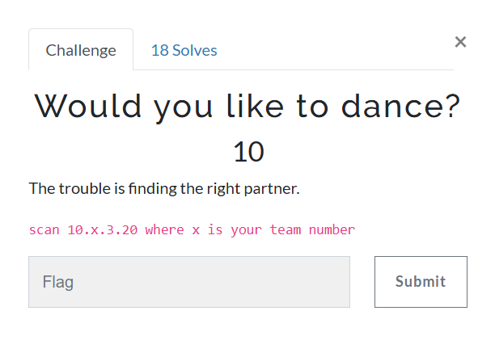
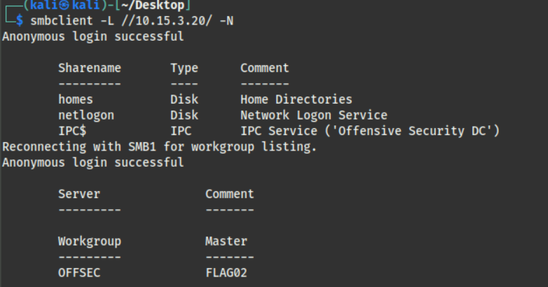
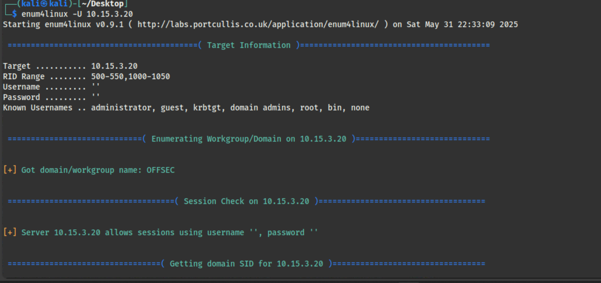
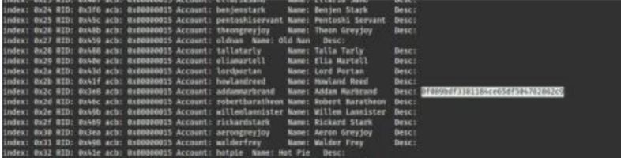

Would you like to dance?

The first thing I tried was to scan the ports to see which ones were open for interaction.

From the image above, the open ports are 139/tcp and 445/tcp, both associated with NetBIOS-SSN services. Since the version is identified as Samba smbd, these ports seem to be used for sharing files with printers or other devices while establishing a session with NetBIOS.
After asking ChatGPT what I could do to interact with this protocol next, the following command was suggested: smbclient -L //10.15.2.20/ -N
smbclient is the command used to make a client connection to the server—similar to how ssh is used to connect with an SSH server. The -L and -N options are used to list shared resources and to disable the password prompt, respectively.
Funny note: //ip/ is the UNC path style format used with the SMB protocol. This simply means: //server/share

After trying to manually browse using ls inside these shares for a while, I discovered that the enum4linux command could automatically enumerate the shares on this server.
 
Luckily, I found the flag in the account information section, specifically in the description of one user.
Note to self
Protocol Knowledge
-
NetBIOS (Network Basic Input/Output System) An old protocol operating at the session layer, used for communication between computers in the same LAN. However, with the advent of TCP/IP, NetBIOS over TCP/IP allows connections beyond the local network. Note that
netbios-ssnrefers to the NetBIOS Session Service. -
SMB (Server Message Block) An application-layer protocol used for sharing files between devices on a network.
Commands
smbclient- ftp-like client to access SMB/CIFS resources on serversenum4linux- tool for enumerating information from Windows and Samba systems.